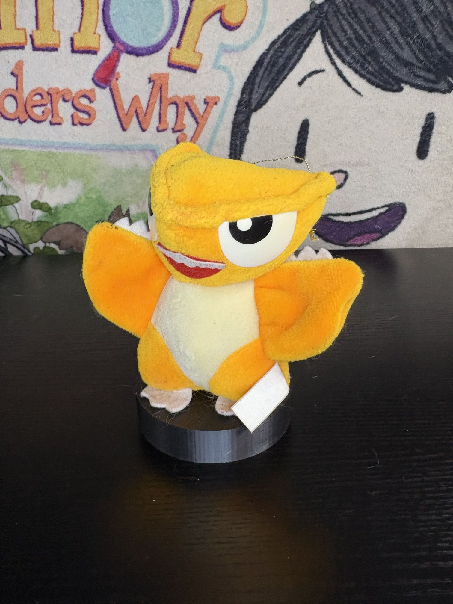
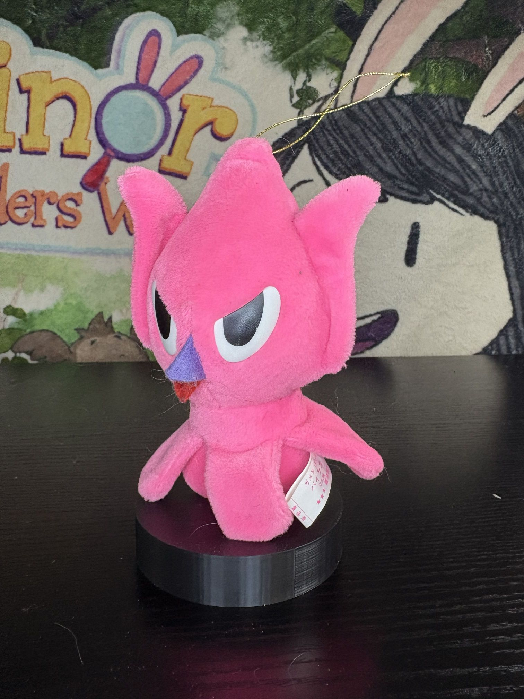

Gamera (sitting)
Release Date: 1992
Company: Banpresto
So I have a few of these gamera plushes since, I adore the gamera movies. (Aside from the 90s trilogy) are much worse than godzilla films, they're so many goofy things about em that I just love it. that being said, the plushes from the 90s here are really really cute chibi versions of classic Gamera monsters. This was in 92 a few years before the first Gamera 90s trilogy, either way this one is just gamera sittin :P He's cute, he's sittin', the material is fairly rough and the eyes are hard plastic which are probably just glued on, so its a miracle they're still on haha. All that being said i think its really cute and I'm a big fan of it.

Gamera (Flying? Laying?)
Release Date: 1992
Company: Banpresto
So these are all prizee machine plushes, like crane games im pretty sure- and must've been fairly common because you can still find them now for very cheap- that goes for all these 90s plushes. This is gamera uhh.. Flying? Laying down? I'm not sure really. but all the stuff pointed out in the first post applies to this one as well. good plush, kinda rough material, plastic eyes. Oh i should say these are fairly small, but that kinda works for what they are!

Gyaos
Release Date: 1992
Company: Banpresto
This is a goofy little fella, hes got a bit toothy grin which is so cute honestly; even if you can still see the mouth above the teeth lol. Same things apply to this guy as the others! short, first material, hard plastic eyes, he does have little felt toes, his wings are unstuffed but that works well - though those were stained for some reason. I don't know how it happened? I dont even know if I did it maybe i had gotten it like that i dont really remember. Oh yeah you can see this one has a golden hang string, i think the flying gamera one has that too so actually i guess that explains hes flying- not laying down!

Viras
Release Date: 1992
Company: Banpresto
This one is really silly, but I dont have much to say that hasnt been said before! He has a hangstring, and the.. ears? and tentacles are unstuffed so it makes them floppy which works perfectly for this goofy fella! I dont have much else to add hes a good fella :p
Guiron
Release Date: 1992
Company: Banpresto
Probably my favorite gamera villain from the classic series! Knife head himself, Guiron! He's really dumb I love him. He also has a hang string- which... makes less sense for him? since I dont think he flies? It's been a while since I watched the movie though maybe he does. the one I have is a bit dirty, I probably need to spot wash him, I'm just scared to do so cuz like hes so old I dont wanna damage it at all. either way hes a good fella :D

Gyaos (96)
Release Date: 1996
Company: Banpresto
SO this guy looks familiar huh? it seems to be a sorta rerelease of the 92 plush of Gyaos but he's much bigger, the colors are darker, and the eyes.. well? they're hard like a plastic wrapped in plush materials? I dont really understand but i guess its fine- It's honestly just a bigger version of the other plush so that's pretty neat! The material and everything else is mostly similar to the original so I dunno its from a set of plushes that are based off the 90s movies but theyre all just the older ones but slightly larger and colored differently- kinda lazy but oh well! :p